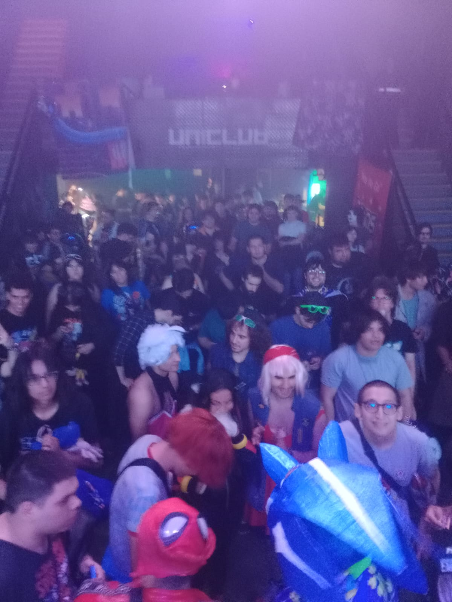
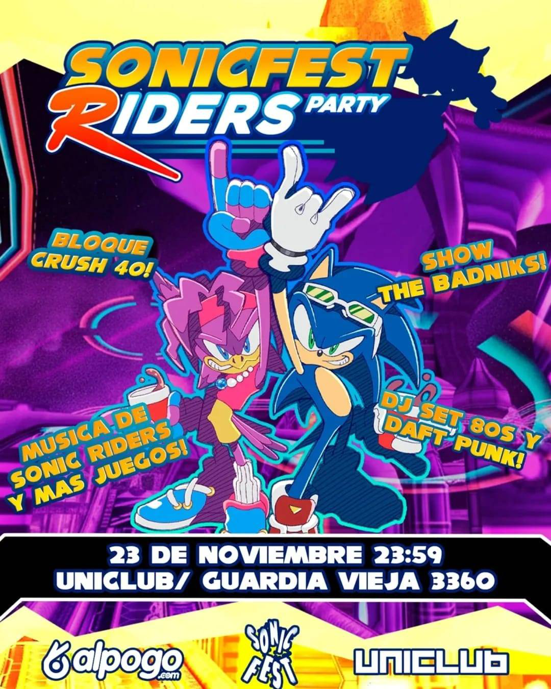

.jpg)
NUEVA SONIC FEST CON MÚSICA ESPECIAL SONIC CD 💿
¡PAST, PRESENT, FUTURE, BAD FUTURE!
📅 Fecha: Sábado 25/04/2026 - 23:59hs
📍 Ubicación: Liverpool Club, Cabrera 4255 (PALERMO) - Cerca de la línea B del Subte.
🎟️ ENTRADAS: Conseguí las tuyas en SONICFEST.COM.AR (Link en Bio)
🤖 DJ Set: Música de Sonic de todas las eras, con especial énfasis en la banda sonora de Sonic CD.
🎸 Show en vivo: THE BADNIKS @thebadniks (Covers de Sonic y Crush 40)
🎁 Sorteos: ¡Regalos y sorteo especial al finalizar la noche!
🛍️ Stands de Merch: Encontrá productos de Sonic de Retrotools, Brendushcka y Kaylla the cat.
🧥 Información importante: El lugar cuenta con guardarropa disponible y servicio de bebidas. Te recomendamos llevar efectivo por las dudas para las compras en los stands y barra.
🔞 Evento exclusivo para mayores de 18 años.
Pedimos a todos mantener conductas de cuidado y respeto entre los asistentes.
Cuiden sus pertenencias en todo momento.
💧 DISFRUTÁ CON RESPONSABILIDAD.
#sonicfest #sonic #soniccd #sonicargentina #clubliverpool

NUEVA JUNTADA DE SONIC EN PALERMO 🇦🇷
100% GRATIS
📅 Fecha: Domingo 1ro de Marzo de 2026
📍 Ubicación: Frente al Planetario (zona Rosedal de Palermo).
🎁 Regalos, sorteos, juegos, adivina al personaje, "UNO" de Sonic y más!
🎧 Música y Show: ULTRASÓNICOS @ultrasonicosok (Covers de Sonic en vivo)
🧊 Helados de regalo para los asistentes
🌤️ ¡HAY ÁRBOLES CON SOMBRA!
🧺 Traé para dibujar, comida para compartir y Picnic para pasar el día con otros fans.
📝 PAUTAS DE CONVIVENCIA Y USO DEL ESPACIO:
Aviso Legal: Este es un encuentro autogestionado de carácter recreativo, gratuito y de libre acceso en el espacio público. Los organizadores no se hacen responsables por daños, pérdidas de objetos personales o incidentes derivados de la conducta individual de los asistentes. Menores de 18 años deben venir acompañados por un adulto responsable. Se suspende por lluvia al domingo siguiente. Actividad informal y sin organización comercial.
💧 MANTENERSE HIDRATADOS.
#sonicfest #sonic #sonicargentina #sonicenargentina
 🎟️FOTOS DE LA SONIC FEST 24/01/2026 PRIMERA DEL AÑO 2026🎟️
🎟️FOTOS DE LA SONIC FEST 24/01/2026 PRIMERA DEL AÑO 2026🎟️
 VER FOTOS + INFO JUNTADA SONIC FEST EN EL ABASTO 3 DE ENERO 2026
VER FOTOS + INFO JUNTADA SONIC FEST EN EL ABASTO 3 DE ENERO 2026


🎟️ ENTRADAS RIDERS PARTY 23/11/2025 (CADUCADO)UNITE A NUESTRO SERVIDOR DE DISCORD PARA CONOCER GENTE QUE VIENE A LA FIESTA Y HACER LA PREVIA!
DISCORD SONIC FEST